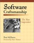
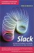
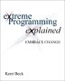
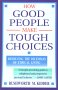
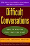
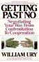
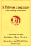
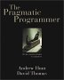
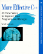

Software Development, Organizations, Problem Solving, and Management
-
Software Configuration Management Patterns: Effective
Teamwork, Practical Integration by Steve Berczuk (with Brad Appleton)
-
This book
describes Essential SCM practices. Developers, team leaders and those
just learning about software configuration management should find this
book useful.
-
Software
Craftsmanship: The New Imperative by Pete McBreen.
-

This book discusses the differences between a craft approach and an
engineering approach to building software, and the benefits of using a
craft approach to build most software applications. It is a great book
to read to learn how to think about your career, or how to build a
software organization. This book is not about Agile Development, per
se, but if you are interested in that, you should read this book
too because the Agile development works best when there are people
skilled in the craft of software working on the project.
-
Slack:
Getting Past Burnout, Busywork, and the Myth of Total Efficiency
by Tom DeMarco.
-
This is
an excellent book that explains very clearly how working longer hours
with fewer resources in the quest for efficiency is counter productive
for knowledge work, such as software development. This is a quick
read, with many interesting stories to support the assertions that the
book makes. The book is targeted at managers but also makes the point
that leadership can happen at any level in the organization.
-
Agile
Software Development Ecosystems : Problems, Practices, and
Principles by Jim Highsmith.
-
 An excellent survey to the principles of agile development approaches
such as Extreme Programming,
SCRUM, and others. The book mixes discussions of the core ideas with
interviews with some of the founders of the Agile Alliance.
An excellent survey to the principles of agile development approaches
such as Extreme Programming,
SCRUM, and others. The book mixes discussions of the core ideas with
interviews with some of the founders of the Agile Alliance.
-
eXtreme programming eXplained : embrace change by Kent Beck
-

Excellent book about how to develop software quickly in the face of changing requirements. (When else does one develop software...) Some of the processes, like Pair Programming may be seem uncomfortable, but any book on software that includes
Sex Tips for Girls in its bibliography has got to have a unique, and important, viewpoint!
-
Surviving Object-Oriented Projects. A Manager's Guide by Alistair Cockburn
-
A good overview of how a move to object technology can, and cannot effect project success. Using case studies, Alistair Cockburn describes the importance of people in the success of an OO project. He also emphasises that the move to object technology involves a different way of thinking, not just a new programming language.
-
The Deadline. A Novel About Project Management by Tom DeMarco.
-
DeMarco's book is similar in style to
The Goal
but covers software development rather than manufacturing. The protagonist takes on a difficult management assignment and learns many of the lessons of modern project management. It is a quick, enjoyable read, and it passes on its lessons with humor, so they are easily remembered. You will want to read some more traditional books on project management, it addition to this book, but this book motivates the lessons in more traditional books.
-
The Psychology of Computer Programming, Silver Anniversary Edition by Gerald M. Weinberg
-
A classic book! This is the original text with comments by Weinberg at the end of each chapter on what he'd say differently now. It is easy to get past the examples which revolve around batch systems, and realize that the core ideas in the book are still valid.
-
Becoming a Technical Leader : An Organic Problem-Solving Approach
by Gerald Weinberg.
-
 This book has lots of good information for technical
people at all levels. This book even has some good work-style and problem solving ideas for non-technical people.
This book has lots of good information for technical
people at all levels. This book even has some good work-style and problem solving ideas for non-technical people.
-
The Secrets of Consulting
by Gerald Weinberg.
-
 Everyone consults, according to Weinberg, and you'll find lots of useful stuff here, whether you are a full time employee, contract employee, or someone who is considering consulting.
Everyone consults, according to Weinberg, and you'll find lots of useful stuff here, whether you are a full time employee, contract employee, or someone who is considering consulting.
-
More
Secrets of Consulting: The Consultants Toolkit by Gerald Weinberg.
- This book talks about how you can keep yourself focused on doing
the right things. The text and examples are geared to consultants, but
most everyone will find these "tools" useful.
-
Gerald Weinberg's Quality Software Management Series
-
The three books of the 4 volume series I've read (Volume 1:
Systems Thinking,
Volume 2:
First-Order Measurement, and Volume 3:
Congruent Action)
had really good stuff on the people issues that affect software development. Even if you are not a manager, these books provide you with information on how to work more effectively with team members and managers alike, and, understand, if not justify some annoying management practices. (I haven't yet read Volume 4: Anticipating Change, but there is probably valuable stuff in there as well.)
-
Sources of Power. How People Make Decisions by Gary Klein.
-
This book is about how people make decisions in a variety of circumstances. This includes solo decision making in crisis situations, as well as team decisions. Discusses the value of stories in expressing and clarifying the decision making process. The discussion of stories (known uses) and the importance of clarifying intent while giving instructions make this worthwhile reading for those studying patterns as a means of conveying expertise.
-
Journey of the Software Professional: A Sociology of Software Development by Luke Hohmann.
- This book really made me think about my work, both day to day and career-wise. Covers practical approaches to improving culture, communication, and work environment. My favorite chapters were Avoiding Bad Working Environments and Working In a Poor Environment.
Negotiation and Problem Solving
-
How Good People Make Tough Choices: Resolving the Dilemmas of Ethical
Living
by Rushworth M. Kidder.
-
-

This book describes a framework for analyzing and resolving ethical
dilemmas. It does not provide you with answers, but it does provide a
great way of thinking about the issues and how to resolve them. The
text has examples based on real situations: from life-and-death
scenarios, to the more banal, but still difficult.
-
Difficult
Conversations : How to Discuss What Matters Most by
Douglas Stone, Bruce Patton and Sheila Heen.
-

An excellent resource on how to approach issues at work and at
home. Should be required reading for everyone who is part of a team or
a relationship.
-
Getting
to Yes : Negotiating Agreement Without Giving In
by Roger Fisher and William Ury.
-
 This is one of the "classic" books on negotiation, and still
worth a read. This book is worth reading if you need to negotiate
anything< (requirements, assignments, schedules) as part of
your job. It also has some insights that will help in personal relationships.
This is one of the "classic" books on negotiation, and still
worth a read. This book is worth reading if you need to negotiate
anything< (requirements, assignments, schedules) as part of
your job. It also has some insights that will help in personal relationships.
-
Getting
Past No : Negotiating Your Way from Confrontation to Cooperation
by William Ury.
-

This book builds on
Getting to Yes. If you find yourself in having trouble making
headway in negitiation situations, it is worth a read. But read
Getting to Yes first.
-
Are Your Lights On? By Gerald M. Weinberg.
-
 An easy to read, entertaining book that illustrates quite clearly what
some people never really learn: you need to know what the problem is
before looking for a solution.
An easy to read, entertaining book that illustrates quite clearly what
some people never really learn: you need to know what the problem is
before looking for a solution.
Patterns in Software
Related books from other categories:
The PLoPD series, A compilation of the "Best of" the PLoP and EuroPLoP conferences. Not as handy for reference material as some of the other patterns books, but good to have on your shelf because people in the patterns community will often reference the patterns here (and some may very well address your problem):
-
Pattern Languages of Programs Design 1 Edited by Coplien & Schmidt.
-
-
Pattern Languages of Program Design 2 Edited by Vlissides, Colpien & Kerth.
-
-
Pattern Languages of Program Design 3 Edited by Martin, Riehle & Buschmann.
-
-
Pattern Languages of Program Design 4 Edited by Neil Harrison, Brian Foote & Hans Rohnert.
-
Analysis Patterns by Martin Fowler.
- Patterns on how to model business and systems and organizations. This book will save you from heading into a lot of dead ends if you walk into a system when you need to model a business process.
A book which covers similar material, but from a database modeling point of view is
Data Model Patterns by David Hay. While these are "patterns" in the more conventional sense (recurring structures, but not broken down into Problem/Context/Solution), this book will tell you a lot about database design.
-
Design Patterns
by the "Gang of Four" (Gamma, Helm, Johnson & Vlissides).
-
This the one book everyone who talks about patterns has should read. It collects the basic software design idioms everyone doing object-oriented software development should know.
-
Pattern Hatching
by the John Vlissides .
-
Using Design Patterns in more detail. This book discusses some of the fine points of the Patterns in
Design Patterns. This is a well written book that
is based on a series of columns from C++ Report. Unlike many compilations of columns, this book reads like a coherent
book.
-
A System of Patterns by Buschmann, Meunier, Rohnert, Sommerlad, Stal.
-
This book has system level patterns than design patterns. It also uses a lot of examples from distributed systems.
Patterns and Christopher Alexander
-
A Pattern Language
by Christopher Alexander, Sara Ishikawa, Murray Silverstein
-

A must read if you are interested in patterns or architecture or urban planning. In the software patterns community, A Pattern Language is often used as an example of how, a pattern language (as opposed to solitary patterns) should be structured.
-
The Timeless Way of Building
by Christopher Alexander
-
 The philiosphy behind patterns and pattern languages. Really helpful in understanding the why of patterns.
The philiosphy behind patterns and pattern languages. Really helpful in understanding the why of patterns.
-
The Oregon Experiment
by Christopher Alexander
-
This book gives a concrete example of how one would apply patterns and pattern languages to a planning/architecture project. Talks about a project at the University of Oregon. Reading this book put some key ideas into focus, like how you use patterns when not starting from scratch, and how to deal with specialized situations where the book of patterns you have doesn't cover everything.
Software Design
-
The
Pragmatic Programmer: From Journeyman to Master
-
This is an excellent book that explains very clearly many
practical things that people often ignore. A great book to read, and
one that you will want to re-read sections of from time to time.
-
Refactoring: Improving the Design of Existing Code by Martin Fowler
-
 This book describes what to do to change code that has gotten messy with time, and how to proceeed to make the changes. If you've been doing Object-Oriented programming for a while you probably know much of what is in here, but it is worth reading anyway, both as a reminder, and as a way to explain the techniques to others. Fowler describes the refactorings very clearly, with guidelines on when to use each technique. Like Design Patterns, this book provides a vocabulary for the important techniques you use to change code.
The examples are in Java, but the techniques can be adapted to any OO language, such as C++ quite readily.
This book describes what to do to change code that has gotten messy with time, and how to proceeed to make the changes. If you've been doing Object-Oriented programming for a while you probably know much of what is in here, but it is worth reading anyway, both as a reminder, and as a way to explain the techniques to others. Fowler describes the refactorings very clearly, with guidelines on when to use each technique. Like Design Patterns, this book provides a vocabulary for the important techniques you use to change code.
The examples are in Java, but the techniques can be adapted to any OO language, such as C++ quite readily.
-
Software for Use: A Practical Guide to the Models and Methods of Usage-Centered Design By Larry L. Constantine and Lucy A. D. Lockwood
-
This is an excellent book about how to build good interfaces. The book, at first glance, is geared towards uasbility professionals, but anyone who has a role in building or specifying systems that have some sort of user interface will benefit from reading, and referring to, this book.
-
Rapid Development, Taming Wild Software Schedules by Steve McConnell.
-
An excellent book that describes best practices for the entire software development lifecycle. This should be required reading for anyone planning or working on a software project.
-
Component Software: Beyond Object-Oriented Programming by Clements Szyperski.
-
This is an excellent discussion about component software. It covers general issues involved in component design and distribution, including technical issues and marketing issues. It provides a good comparison of the major component technologies (COM, CORBA and Java Beans), and it also contains a good deal of timeless information. While this is not always light reading, it is very well written. This is a book developers, architects, and product managers can all read parts of!
Web & Internet
-
Designing Web Usability by Jakob Nielson
-
An excellent book. It describes what is in an effective web sites, and provides many examples of good and bad web design. People who work with web sites at all levels: users, project managers, and people who implement web sites, will find this book incredibly useful and inspirational. Read this book before doing any work on a web site or intranet.
-
The XML Companion by Neil Bradley
-
The best guide and refererence to XML I've seen so far. I've had people recommend
The XML Bible by Harold to me, but this book seems like a more useful reference.
-
The XSL Companion by Neil Bradley
-
Like his book on XML, this book gives you enough to get started, and has enough in it to keep as a refererence.
Technology & Society
-
How
Buildings Learn : What Happens After They're Built by Stewart
Brand.
-
 This is a great book if you are interested in architecture, history,
or just simply how systems change and grow over time.
This is a great book if you are interested in architecture, history,
or just simply how systems change and grow over time.
-
The Clock of the Long Now : Time and Responsibility by Stewart Brand
-
 An interesting book. Brand discusses the
Long Now project, but puts it in the context of the different time scales we all work on. If you didn't already understand it, this book explains when and why the long view is necessary. I think that this is a worthwhile read for systems designers, as well as excellent general interest reading.
An interesting book. Brand discusses the
Long Now project, but puts it in the context of the different time scales we all work on. If you didn't already understand it, this book explains when and why the long view is necessary. I think that this is a worthwhile read for systems designers, as well as excellent general interest reading.
-
Guns, germs, and steel : the fates of human societies by Jared M. Diamond
-
 Interesting, and well written, historical overview of how the environment shaped the development of human society. It's a sort of history of the world in 400 pages. This book gives lots of examples of the differences between apparent causes and root causes. It you like history, or are often curious about why things are, this is a worthwhile book.
Interesting, and well written, historical overview of how the environment shaped the development of human society. It's a sort of history of the world in 400 pages. This book gives lots of examples of the differences between apparent causes and root causes. It you like history, or are often curious about why things are, this is a worthwhile book.
-
The Victorian Internet by Tom Standage
-
This book describes parallels between the social impact of the telegraph and that of the Internet. The title put me off the book initially, since I thought that comparisions between the telegraph and the Internet would be tenuous. However, I was surprised to find out that there were issues about on-line romances, on-line fraud, among other familiar sounding issues, in the age of the telegraph. This book is yet another reminder that there are a whole host of issues that continue to arise whenever a new communications technology is introduced. A quick, interesting read.
-
How the Mind Works by Steve Pinker.
- The title pretty much explains it. Given the title this is a very approachable book, and even has its amusing moments. I found it a bit easier to read than
The Language Instinct, which is also worth a look if you are interested in where language comes from.
-
The Invisible Computer by Donald A. Norman.
-
A mix of Norman's usual excellent ideas about usability combined with the market concepts of
Crossing The Chasm. An excellent book that guides us to the coming era when computers are in tools we use everyday, rather than complicated devices we need to be experts to use.
C++ Programming
-
The Practice of Programming by B. W. Kernighan and R. Pike
-
A collection of good, time tested, ideas. The authors give examples in C++, Java, scripting languages, and C. The examples are biased towards C, but there are good general principles about design, coding, debugging and testing. Combine this book with Multi-Paradigm Design for C++, and you will have inspiration to look at problems multiple ways before jumping in and coding.
-
Programming pearls by Jon Louis Bentley
-
This is one of those classic books that you should read. Lots of good programming basics.
-
Code Complete by Steve McConnell.
-
This book is an excellent resource about the mechanics of coding. While some of the examples are language specific, the principles are general. You should at least skim through, if not read and own, this book at some point in your career.
-
Multi-Paradigm Design for C++ by Jim Coplien.
-
Coplien explains how to apply commonality and variability analysis to solve problems using all the tools at the disposal of the C++ programmer. The book shows how and when to combine the object-oriented, functional, and generic paradigms along with other tools such as patterns. The book is primarily of use to the experienced C++ developer/designer, but anyone with a interest in how software design is influenced by the application language will find the book interesting.
-
C++ Primer by Stanley Lippman and Josee Lajoie.
-
 This is an excellent book to introduce someone to C++ with. I've recommended the previous editions to people, with much success. The third edition is updated for the standard, and includes information on the standard library, STL, etc. This book is much more approachable to Stroustrup's
The C++ Programming Language 2nd Edition. I'd buy this book first, and then the
The C++ Programming Language. They both should be part of a C++
developer's library.
This is an excellent book to introduce someone to C++ with. I've recommended the previous editions to people, with much success. The third edition is updated for the standard, and includes information on the standard library, STL, etc. This book is much more approachable to Stroustrup's
The C++ Programming Language 2nd Edition. I'd buy this book first, and then the
The C++ Programming Language. They both should be part of a C++
developer's library.
-
Effective C++ Second Edition by Scott Meyers.
-

This book and
More Effective C++ list many of the idioms a serious C++ programer should know.
-
The Design and Evolution of C++ by Bjarne Stroustrup.
-
This book discusses some of the history of C++. It will help you understand why some of the parts of the C++ Language that seem broken are in the language. (Hint: most have to do with compatability with C.)
The Unified Modeling Language
-
UML
Distilled, Second Edition: A Brief Guide to the Standard Object Modeling Language by Martin Fowler.
-
 A good summary of the UML. If you buy only one UML book, get this
one. (I do recommend that you get the
Unified Modeling Language User Guide
if you are serious about using UML.)
A good summary of the UML. If you buy only one UML book, get this
one. (I do recommend that you get the
Unified Modeling Language User Guide
if you are serious about using UML.)
-
The Unified Modeling Language User Guide by Grady Booch, Jim Rumbaugh and Ivar Jacobson
-
An excellent book to have on your bookshelf if you work with UML. Provides a good overview of the UML.
-
The Unified Modeling Language Reference Manual by James Rumbaugh, Ivar Jacobson and Grady Booch
-
Some good material at the beginning. The rest is reference, which may not be terribly useful, but you never know. Good book to have on your shelf.
-
Developing Software with UML by Bernd Oestereich
-
This book is not a "must have" if you own any of the Three Amigos books. What this book adds is a summary of the Object Constraint Language, and some examples of how to use UML in the context of a project. Buy it if you have some extra money and are seeking UML examples.
COM, DCOM & Windows Programming
-
Essential COM by Don Box.
- This book is the best book on Microsoft's Comopnent Object Model I've read so far. Doesn't cover compiler specific topics like ATL, but definitely worth a look if you are building COM components.